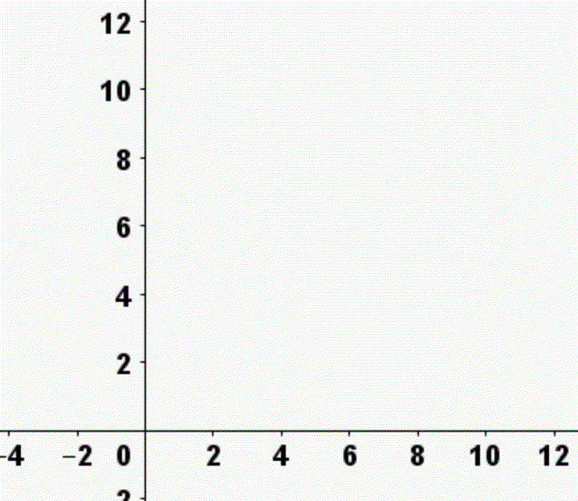
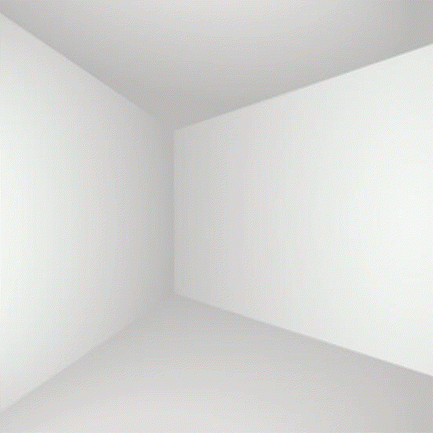

Tabla de contenidos
- 1. Introducción
- 2. Primer acercamiento
- 3. Intersección entre rectas de \(\mathbb{R}^2\)
- 4. Ecuación de la recta dados dos puntos
- 5. Rectas paralelas y rectas perpendiculares
- 6. Actividades de práctica hasta aquí
- 7. ¿Cómo expresamos una recta en el espacio?
- 8. Paralelismo, perpendicularidad y... ¿qué más?
- 9. Intersección de rectas en el espacio
- 10. Autoevaluación
1. Introducción
En la unidad anterior trabajamos con vectores flecha. Ahora, comenzamos a explorar la unidad 2 en la que veremos, desde lo algebraico, cómo nos sirven los vectores para pensar las rectas y los planos, y, cómo éstos, nos permiten resolver algunas situaciones. Desde ya, la mirada geométrica será de gran aporte.
Podemos pensar las rectas tanto en el plano \( \mathbb{R}^2 \) como en el espacio \( \mathbb{R}^3 \). Pensaremos a los planos en el espacio \( \mathbb{R}^3 \). También es posible pensar cómo serían estos objetos en espacios como \( \mathbb{R}^4 \), \( \mathbb{R}^5 \) o cualquier \( \mathbb{R}^n \) siendo \(n\) cualquier número natural.
En esta unidad nos concentraremos en \( \mathbb{R}^2 \) y \( \mathbb{R}^3 \), y en este libro, trabajaremos exclusivamente rectas en \( \mathbb{R}^2 \) y \( \mathbb{R}^3 \)
Buena suerte... y como ya saben, pueden realizar sus preguntas y plantear sus dudas en el foro Consultas.
2. Primer acercamiento
Para comenzar, les proponemos que se animen a jugar con GeoGebra. Para eso, les pedimos que realicen el problema 1 de la unidad 2 que comienza en la página 31 de la Guía de Problemas.

Piénsenlo, equivóquense, metan mano y si algo no sale, o si no se entiende lo que se pregunta, planteen su duda en el foro Consultas. Tal vez, alguien ya hizo allí la pregunta por ustedes… y si no, pueden animarse a ser la primera persona.
2.1. Ecuación explícita o cartesiana de la recta
En el siguiente video, el prof. Martín Tornay, nos recuerda la forma de expresar a las rectas como las ven en Análisis Matemático 1, que también, quizás hayan trabajado en el Taller de Resolución de Problemas del COPRUN y que, además, posiblemente hayan visto en la escuela secundaria. Les proponemos que lo vean:
2.2. Ecuación vectorial o paramétrica de la recta
¿Encuentran alguna relación entre lo que hacieron al resolver el problema 1 de la unidad 2 con lo visto en el video del apartado anterior? Miren el siguiente video sobre otra forma de representar a las rectas y no olviden tener a mano lo trabajado anteriormente. Esta forma podrá ser útil sobre todo para escribir las ecuaciones de las rectas en \(\mathbb{R}^3\) y en \(\mathbb{R}^n\).

2.3. Puntos que pertenecen o que no pertenecen a una recta determinada
¿Cómo sabemos si un punto pertenece o no a una cierta recta ? ¿Cómo podemos usar "una" ecuación de una recta para saber si un punto P pertenece o no a su gráfica? ¿Qué diferencia hay si la ecuación de la recta está escrita en forma vectorial o en forma explícita?
En el siguiente video respondemos estas preguntas para el caso en que la recta esté dada a partir de una ecuación vectorial.
¿Cómo responden estas preguntas en el caso de que la ecuación de la recta esté escrita en forma cartesiana o explícita? Piensen en esto y si no sale, ya saben dónde hacer sus Consultas.
3. Intersección entre rectas de \(\mathbb{R}^2\)
¿Cómo encontramos los puntos que tienen en común dos o más rectas? ¿De qué depende la estrategia?
Les proponemos que piensen cómo hallar los puntos de intersección (puntos en común) de las rectas del problema 8a de la unidad 2 en la página 35 de la Guía de Problemas.
En el siguiente video mostramos una posible resolución, piensen una forma de encontrar la intersección entre rectas antes de verlo.
¿Cómo podríamos encontrar la intersección si las ecuaciones de las rectas están escritas en forma explícita?
4. Ecuación de la recta dados dos puntos
¿Cómo encontramos una ecuación de una recta que pasa por dos puntos dados \( A \) y \( B \)? ¿Qué estrategias podemos utilizar?
Para contestar, podemos hacernos algunas preguntas previamente, por ejemplo: ¿qué necesitamos encontrar? ¿ qué información tenemos? ¿ cómo conseguimos lo que necesitamos a partir de lo que tenemos?
Teniendo en cuenta las preguntas que nos hicimos, encuentren una ecuación vectorial de la recta que pasa por lo puntos \(A=(2,3)\) y \(B=(1,4)\). Luego, miren la resolución que se presenta en el ejemplo 8 de la página 6 del Apunte sobre rectas de \(\mathbb{R}^2\) (no hagan trampa, comience solo por el ejemplo... jajaja) y compárenla con lo que hicieron. ¿Llegaron a la misma ecuación? ¿usaron la misma estrategia?
Lean el resto del Apunte sobre rectas de \(\mathbb{R}^2\) para reforzar algunas de las cuestiones que estuvimos trabajando, en él van a encontrar definiciones, propiedades, ejemplos resueltos, etc.
5. Rectas paralelas y rectas perpendiculares
Lean sobre paralelismo y perpendicularidad de rectas en la página 7 del Apunte sobre rectas de \(\mathbb{R}^2\)).
Habrán notado que analizar si dos rectas son paralelas o son perpendiculares se reduce a mirar sus vectores directores. Estos temas (vectores perpendiculares y vectores paralelos) fueron trabajados en el libro anterior.
Según la definición de rectas paralelas dada en el apunte, ¿una recta, es paralela a sí misma? ¿Por qué?
6. Actividades de práctica hasta aquí
Les dejamos las siguientes Actividades de práctica sobre rectas en \(\mathbb{R}^2\). Recuerden plantear sus dudas en el foro Consultas.

7. ¿Cómo expresamos una recta en el espacio?
Vamos a pensar cómo definir rectas en \(\mathbb{R}^3\).
Primero, les proponemos que piensen ustedes el problema 4 de la unidad 2 de la Guía de problemas que está en las páginas 33 y 34. Si les resulta muy complejo, podrían empezar por los problemas 2 y 3.
En el siguiente video del profesor Daniel, les compartimos una posible solución a ese problema, el 4. También, en el mismo video, definimos una forma algebraica de representar rectas en \(\mathbb{R}^3\)
A partir de lo que vieron en el video, piensen, ¿cómo hallan la ecuación vectorial de una recta conocidos dos puntos por el que pasa?
Para practicar sobre esto tienen el ejercicio 1 de la Guía de ejercicios sobre rectas en el espacio. También pueden leer y hacer el problema 5 de la página 34 de la Guía de problemas.
8. Paralelismo, perpendicularidad y... ¿qué más?
Cuando trabajamos en el plano \(\mathbb{R}^2\) vimos que dos rectas distintas son paralelas si tienen la misma dirección, es decir, si sus vectores directores son paralelos. O sea, si sus vectores directores son múltiplo uno del otro.
En el plano, dos rectas distintas que son paralelas, no tienen ningún punto en común. Por la definición, toda recta es paralela a sí misma, y, en ese caso, ambas tienen todos sus puntos en común.
Además, vimos también la noción de perpendicularidad. En el plano, dos rectas son perpendiculares si sus vectores directores son perpendiculares, es decir, si el producto escalar entre los vectores directores es 0.
En el espacio, ¿pasa lo mismo? ¿Existen otras posiciones relativas entre dos rectas?
En el Apunte sobre rectas en el espacio podrán leer sobre esta cuestión.
¿Cuán similares y cuán diferentes son las nociones de paralelismo y perpendicularidad en el plano y en el espacio?
- En el plano (euclídeo), dada una recta y un punto, existe una única recta paralela a la dada que pasa por el punto. En el espacio, ¿sucede lo mismo?
- En el plano (euclídeo), dada una recta y un punto, existe una única recta perpendicular a la dada y que pasa por ese punto. En el espacio, ¿sucede lo mismo?
- En el plano, las rectas perpendiculares siempre se cortan. ¿Qué sucede en el espacio?
Sobre intersección de rectas hablaremos en el siguiente apartado. Mientras tanto, los ejercicios 2, 3 y 4 de la Guía de ejercicios sobre rectas en el espacio tratan sobre los temas de este apartado.
Ah... casi nos olvidamos de pasarles este Video con la resolución de un problema en el que hay aque hallar la ecuación de una recta paralela a otra que pasa por un punto dado del profesor Marcelo.

9. Intersección de rectas en el espacio
¿Cómo sabemos, desde el punto de vista algebraico, si dos rectas del espacio se cortan?
Intenten pensarlo ustedes resolviendo el problema 8b de la página 35 de la Guía de Problemas.
A continuación les presentamos un texto y un video en el que se busca la intersección de dos rectas de \(\mathbb{R}^3\) . Se trata del mismo ejemplo en ambos casos, así que ustedes eligen si leen el texto, si miran el video de la profesora Perla... o si eligen ambos:
- Texto con la resolución de un problema de intersección de rectas en el espacio
- Video con la resolución de un problema de intersección de rectas en el espacio
Para practicar con ejercicios que integran los contenidos de esta semana y la semana pasada tienen el resto de los ejercicios de la Guía de ejercicios sobre rectas en el espacio y los ejercicios (1), (2), (3), (4), (5) y (12) de las páginas 44, 45 y 46 de la Guía de problemas.
No se olviden de plantear sus preguntas en el foro de Consultas. Muchos compañeros y muchas compañeras lo están aprovechando con las preguntas, y también hay muy buenos aportes. No dejen de pasar por allí.
10. Autoevaluación
Como parte de la evaluación continua (ver las condiciones en Condiciones de trabajo, de evaluación y de acreditación) les proponemos las siguientes autoevaluaciones:
Ingresen a los cuestionarios para ver la fecha de apertura y la de cierre.
El puntaje que se obtiene en la autoevaluación solo debe tomarse como un porcentaje de resolución correcta.
Esperamos que para cuando sea el momento de realizar la autoevaluación hayan podido realizar las actividades de práctica, realizado las Consultas, leído los textos y vistos los videos.